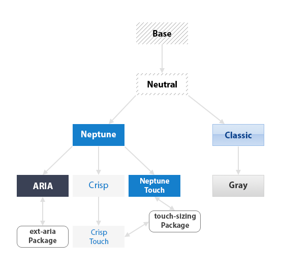

Theming System
Many classes have shortcut names used when creating (instantiating) a class with a
configuration object. The shortcut name is referred to as an alias (or xtype if the
class extends Ext.Component). The alias/xtype is listed next to the class name of
applicable classes for quick reference.
Framework classes or their members may be specified as private or protected. Else,
the class / member is public. Public, protected, and private are access
descriptors used to convey how and when the class or class member should be used.
Public classes and class members are available for use by any other class or application code and may be relied upon as a stable and persistent within major product versions. Public classes and members may safely be extended via a subclass.
Protected class members are stable public members intended to be used by the
owning class or its subclasses. Protected members may safely be extended via a subclass.
Private classes and class members are used internally by the framework and are not intended to be used by application developers. Private classes and members may change or be omitted from the framework at any time without notice and should not be relied upon in application logic.
static label next to the
method name. *See Static below.Below is an example class member that we can disect to show the syntax of a class member (the lookupComponent method as viewed from the Ext.button.Button class in this case).
Let's look at each part of the member row:
lookupComponent in this example)( item ) in this example)Ext.Component in this case). This may be omitted for methods that do not
return anything other than undefined or may display as multiple possible values
separated by a forward slash / signifying that what is returned may depend on the
results of the method call (i.e. a method may return a Component if a get method calls is
successful or false if unsuccessful which would be displayed as
Ext.Component/Boolean).PROTECTED in
this example - see the Flags section below)Ext.container.Container in this example). The source
class will be displayed as a blue link if the member originates from the current class
and gray if it is inherited from an ancestor or mixed-in class.view source in the example)item : Object in the example).undefined a "Returns" section
will note the type of class or object returned and a description (Ext.Component in the
example)Available since 3.4.0 - not pictured in
the example) just after the member descriptionDefaults to: false)The API documentation uses a number of flags to further commnicate the class member's function and intent. The label may be represented by a text label, an abbreviation, or an icon.
classInstance.method1().method2().etc();false is returned from
an event handler- Indicates a framework class
- A singleton framework class. *See the singleton flag for more information
- A component-type framework class (any class within the Ext JS framework that extends Ext.Component)
- Indicates that the class, member, or guide is new in the currently viewed version
- Indicates a class member of type config
- Indicates a class member of type property
- Indicates a class member of type
method
- Indicates a class member of type event
- Indicates a class member of type
theme variable
- Indicates a class member of type
theme mixin
- Indicates that the class, member, or guide is new in the currently viewed version
Just below the class name on an API doc page is a row of buttons corresponding to the types of members owned by the current class. Each button shows a count of members by type (this count is updated as filters are applied). Clicking the button will navigate you to that member section. Hovering over the member-type button will reveal a popup menu of all members of that type for quick navigation.
Getting and setter methods that correlate to a class config option will show up in the methods section as well as in the configs section of both the API doc and the member-type menus just beneath the config they work with. The getter and setter method documentation will be found in the config row for easy reference.
Your page history is kept in localstorage and displayed (using the available real estate) just below the top title bar. By default, the only search results shown are the pages matching the product / version you're currently viewing. You can expand what is displayed by clicking on the button on the right-hand side of the history bar and choosing the "All" radio option. This will show all recent pages in the history bar for all products / versions.
Within the history config menu you will also see a listing of your recent page visits. The results are filtered by the "Current Product / Version" and "All" radio options. Clicking on the button will clear the history bar as well as the history kept in local storage.
If "All" is selected in the history config menu the checkbox option for "Show product details in the history bar" will be enabled. When checked, the product/version for each historic page will show alongside the page name in the history bar. Hovering the cursor over the page names in the history bar will also show the product/version as a tooltip.
Both API docs and guides can be searched for using the search field at the top of the page.
On API doc pages there is also a filter input field that filters the member rows using the filter string. In addition to filtering by string you can filter the class members by access level, inheritance, and read only. This is done using the checkboxes at the top of the page.
The checkbox at the bottom of the API class navigation tree filters the class list to include or exclude private classes.
Clicking on an empty search field will show your last 10 searches for quick navigation.
Each API doc page (with the exception of Javascript primitives pages) has a menu view of metadata relating to that class. This metadata view will have one or more of the following:
Ext.button.Button class has an alternate class name of Ext.Button). Alternate class
names are commonly maintained for backward compatibility.Runnable examples (Fiddles) are expanded on a page by default. You can collapse and expand example code blocks individually using the arrow on the top-left of the code block. You can also toggle the collapse state of all examples using the toggle button on the top-right of the page. The toggle-all state will be remembered between page loads.
Class members are collapsed on a page by default. You can expand and collapse members using the arrow icon on the left of the member row or globally using the expand / collapse all toggle button top-right.
Viewing the docs on narrower screens or browsers will result in a view optimized for a smaller form factor. The primary differences between the desktop and "mobile" view are:
The class source can be viewed by clicking on the class name at the top of an API doc page. The source for class members can be viewed by clicking on the "view source" link on the right-hand side of the member row.
The default themes available with Ext JS can be used out of the box to create clean and professional looking applications. However, you may wish to provide your own styling that matches your personal design aesthetic or that of an existing enterprise design.
Historically, styling an application meant creating style sheets with rules meant to decorate individual HTML elements used in the rendering of a component. Several issues arise with this approach. The first being that you’re now burdened with styling across all supported browsers. Secondly, as the framework matures the underlying component elements may change leaving you with the unpleasant task of chasing the changes in your style rules as they relate to the evolved element structure. Styling your application using the theming API offered with ExtJS solves these problems for you.
Themes created using the theming API may be shared across any Ext JS application in the workspace folder. This allows you to style once and apply that style over and over with confidence in the consistency of your applications’ look and feel. This guide will list the requirements necessary for theming as well as walk you through the steps of generating a sample workspace, application, and custom theme along with application-specific styling.
Sencha Cmd is a command-line tool used to package and deploy Ext JS and Sencha Touch applications. To build a theme in Ext JS 5, you must have Sencha Cmd 5 or higher installed on your computer. Sencha Cmd 5 removes the need to have SASS and Compass installed on your computer as it uses its own bundled versions.
For more information about installing and getting started with Sencha Cmd see Introduction to Sencha Cmd.
Ruby is an open source programming language that is required to manage themes using Sencha Cmd. Refer to the Introduction to Sencha Cmd guide for instructions on installing Ruby.
Java JRE 1.7+ (optional, but recommended)
Java JRE 1.7+ is required to run "sencha app watch". This command is run within the application directory and updates the compiled theme automatically as you modify the theme.
Note: Without Java 7+ and "sencha app watch" you will need to run “sencha app refresh” after each change made to the application and / or theme as you follow through the steps in this guide.
Custom themes are based on default themes included with the Ext JS SDK.
Download Ext JS and extract the Ext JS development kit (SDK) to a location of your choosing.
Once you have installed all of the above requirements for theme building, you can proceed with creating a fully customized theme.
Workspaces generated by Sencha Cmd are instrumental in allowing the Ext SDK and packages, including themes, to be shared across applications located in the workspace. However, setting up a workspace is not a requirement for theming. If you are creating a theme within a stand-alone application you may skip to the next next section.
Note: If you are not using a workspace, please make sure to remove "workspace" from our example file paths as necessary.
For this tutorial we’ll create a workspace using Sencha Cmd so that the custom theme is accessible to all apps within the workspace. Run the following command from the web server directory where your workspace will be created.
Note: Replace {path/to/Ext-JS-5-SDK} in the following command with the local path to the Ext JS 5 SDK.
sencha -sdk {path/to/Ext-JS-5-SDK} generate workspace my-workspace
The generate workspace command will create the scaffolding for a Sencha workspace in the
target directory "my-workspace". The "generate workspace" command copies the Ext JS SDK
workspace so that the theme and application can find their required dependencies. This
workspace is where your custom theme package will live. You will also create an application
here that will use your custom theme. Next, change your working directory to the new
"my-workspace" directory:
cd my-workspace
You should now see two directories inside your workspace folder:
"ext" – contains the Ext JS SDK
"packages" – will contain the packages/themes used by applications in the workspace
Before creating a custom theme we need to set up a way to test the theme. Generate a skeleton Ext JS application using the following command from the "my-workspace" directory:
sencha -sdk ext generate app ThemeDemoApp theme-demo-app
Sencha Cmd has now generated an application named ThemeDemoApp in a new sub-directory named "theme-demo-app". Change the working directory to the newly created application directory:
cd theme-demo-app
Sencha Cmd simplifies the process of creating a custom theme by generating a theme package containing all the necessary files required for your custom theme. Run the following command from the "theme-demo-app" directory:
sencha generate theme my-custom-theme
This tells Sencha Cmd to generate a theme package named "my-custom-theme" in the "packages" directory. You should see a newly created directory named "my-custom-theme" in the “packages” directory (the “my-custom-theme” folder may be nested in a “local” directory within “packages” depending on the version of Sencha Cmd you’re working with). Let’s take a look at the default contents of the custom theme folder:
"package.json" - This is the package properties file. It tells Sencha Cmd certain things about the package like its name, version, and dependencies (other packages that it requires).
"sass/" - This directory contains all of your theme’s SASS files. The sass files are divided into 4 main sections:
"resources/" - contains images and other static resources that your theme requires
"overrides/" - contains any JavaScript overrides to Ext JS component classes that are required for theming those components
Note: The files and folders in "sass/var/", "sass/src", and "overrides" should be structured to match the file path of the component you are styling / overriding.
For example, variables that change the appearance of Ext.panel.Panel will be placed in a file named "sass/var/panel/Panel.scss".
Going forward we’ll be making incremental changes to the theme and sample application.
We’ll want Sencha Cmd to detect these changes and compiled them into the output CSS used
by the application. To accomplish this, run the following command:
sencha app watch
Reminder: The "sencha app watch" command requires Java JRE 1.7+. If you are unable to run “sencha app watch” you’ll need to run “sencha app refresh” after each change to the theme. For brevity, we’ll assume you have “sencha app watch” running for the duration of this guide.
All Sencha theme packages are part of a larger hierarchy of themes and each theme package must extend a parent theme. The next step in creating your custom theme is to select which theme to extend. Ext JS ships with the following themes:
"ext-theme-base" - This package is the base theme for all other themes and is the only theme that does not have a parent theme. It contains the bare minimum set of CSS rules that are absolutely required for Ext JS components and layouts to work correctly. The style rules in "ext-theme-base" are not configurable in a derived theme. You should avoid overriding any of the style rules that are created by this theme.
"ext-theme-neutral" - The neutral theme extends "ext-theme-base", and contains the vast majority of configurable style rules. Most of the variables that are available for configuring the appearance of Ext JS components are defined in "ext-theme-neutral". These are the variables that can be overridden by your custom theme.
"ext-theme-neptune" - Modern borderless theme. Extends "ext-theme-neutral".
"ext-theme-neptune-touch" - Neptune-Based Touch Theme. Extends "ext-theme-neptune".
"ext-theme-crisp" - Minimalistic Theme. Extends "ext-theme-neptune".
"ext-theme-crisp-touch" - Crisp-Based Touch Theme. Extends "ext-theme-crisp".
"ext-theme-classic" - The classic blue Ext JS theme. Extends "ext-theme-neutral".
"ext-theme-gray" - Gray theme. Extends "ext-theme-classic".
"ext-theme-aria" - Accessibility theme. Extends "ext-theme-neptune".
This chart demonstrates how theme inheritance works in Ext JS 5.

So, which theme should your custom theme extend? We recommend using either "ext-theme-neptune", "ext-theme-classic", or "ext-theme-crisp" as the starting point for custom themes (or “ext-theme-neptune-touch” / “ext-theme-crisp-touch” when theming for tablets). The reason for this is that these themes contain all the code necessary for creating an attractive theme out of the box. The Neutral theme should be thought of as a very abstract theme, and should not typically need to be extended directly. Creating a custom theme by overriding "ext-theme-neutral" requires hundreds of variable overrides and many hours of work and should only be done by very advanced theme developers. However, a custom theme derived from the Neptune, Crisp, or Classic theme can be up and running in minutes by simply changing a couple of variables. Additionally, you can override "ext-theme-gray" or "ext-theme-aria" if they provide a more desirable starting point for your custom theme.
In this tutorial we will create a custom theme that extends the Neptune theme. The first
step is to configure your custom theme with the name of the theme it is extending. This is
done by changing the extend property in "packages/my-custom-theme/package.json" from its
default value as shown here:
"extend": "ext-theme-classic"
to:
"extend": "ext-theme-neptune"
Your custom theme is now configured to use the Neptune theme as a base and your custom theme is identical to the default Neptune theme. In the following steps you’ll make your own changes to begin to differentiate your custom theme from Neptune.
Let’s start by modifying the base color from which many Ext JS components’ colors are
derived. Due to the use of $base-color through the default themes making a global change
to $base-color will have an effect on most all components in the Ext JS library. Create
a new folder / file: "packages/my-custom-theme/sass/var/Component.scss". Add the
following code to the Component.scss file:
$base-color: #317040 !default;
Be sure to include !default at the end of all variable assignments in your custom theme.
When inheriting variables Sencha Cmd includes variable files in "reverse" order;
most-derived theme first, base theme last. For more information on the use of !default
see Variable Defaults.
The value of $base-color must be a valid HTML color code; see the HTML Color Codes web page.
For the complete list of Ext JS global SASS variables see Global_CSS.
To configure your test application to use your custom theme, find the following line in "theme-demo-app/app.json"
"theme": "ext-theme-neptune",
and replace it with:
"theme": "my-custom-theme",
As changes are made to your application and theme the "sencha app watch" routine will re-compile the theme and app as necessary. Once “sencha app watch” finishes processing the change you can view the application in your browser at “localhost:1841/theme-demo-app/index.html” (or when not using app watch: **“localhost/my-workspace/theme-demo-app/index.html”). At this time you should see the green color we specified earlier as $base-color applied to the components on the screen.
Each themeable Ext JS component has a list of variables that can be used to configure its appearance. Let’s change the font-family of Panel Headers in "my-custom-theme". Create a file named "my-custom-theme/sass/var/panel/Panel.scss" and add the following code:
$panel-header-font-family: Times New Roman !default;
View your application now and you should see that the panel headers use "Times New Roman" font. You can find the complete list of SASS variables for each component in the “CSS Variables” section of the component’s API doc.
For example, see Ext.panel.Panel and scroll down to the section titled “CSS Variables”
Every component in the Ext JS framework has a user interface (ui) configuration,
which defaults to default. This property can be configured on individual component
instances to give them a different appearance from other instances of the same type. This
config is used within the Neptune theme to create different types of Panels
Buttons.
For example, panels with the ‘default’ UI have dark blue headers and panels with the ‘light’ UI have light blue headers. Buttons use UI’s to give toolbar buttons a different appearance from regular buttons.
The ext-theme-neutral theme includes SASS mixins for many different Ext JS components. You can call these mixins to generate new UIs for components. Available mixins for each component are listed in the API documentation.
For example, see Panel and scroll down to the "CSS Mixins" section to see what parameters the Panel UI mixin accepts. Let’s use this mixin to create a custom Panel UI. Create a file named "my-custom-theme/sass/src/panel/Panel.scss" and add the following code to it:
@include extjs-panel-ui(
$ui: 'highlight-framed',
$ui-header-background-color: red,
$ui-border-color: red,
$ui-header-border-color: red,
$ui-body-border-color: red,
$ui-border-width: 5px,
$ui-border-radius: 5px
);
This mixin call creates a new Panel UI named "highlight" which has a red header background,
red bordering, 5px border, and 5px border-radius. To use this UI, configure a Panel with
“highlight” as its ui property. Open "theme-demo-app/app/view/Main.js" and replace the
items array with the following:
items: [{
// custom "highlight" UI
xtype: 'panel',
ui: 'highlight',
frame: true, // Make sure to add this config to see the frame highlight changes
bind: {
title: '{name}'
},
region: 'west',
html: '<ul><li>This area is...</li></ul>',
width: 250,
split: true,
tbar: [{
text: 'Button',
handler: 'onClickButton'
}]
},{
region: 'center',
xtype: 'tabpanel',
items:[{
title: 'Tab 1',
html: '<h2>Content appropriate for the current navigation.</h2>'
}]
}]
View your application in a web browser and you should see the red "highlight" panel in the west region.
While UI mixins are a handy way to configure multiple appearances for a component, they should not be overused. Each call to a UI mixin generates additional CSS rules. Gratuitous calls to UI mixins can produce an overly large CSS file. Another important point to remember when calling UI mixins is to call the mixin by passing its named parameters, not an ordered list of parameter values. Although SASS supports both forms it’s best to use this form:
@include extjs-component-ui(
$ui-foo: foo,
$ui-bar: bar
);
And avoid this form:
@include extjs-component-ui(foo, bar);
Due to the complexity and number of mixin parameters, we cannot guarantee that the order will stay the same if new parameters are added or a deprecated parameter is removed.
Many of the components within Ext JS have rounded corners and linear gradient
backgrounds. These effects are simple to accomplish in modern browsers using CSS3.
However, ExtJS 5 supports IE8 and IE9; which either do not support these effects or do so
in a way that makes combining the effects a challenge when generating cross-browser themes.
Sencha Cmd closes this gap by rendering each component requiring these effects in a headless browser and slicing images from the corners / gradients for use as background images in the component markup in IE8 / 9. When adding custom UI’s you’ll need to include them in the slicing manifest used by Sencha Cmd so that the component decorated with the custom UI will be sliced for use in IE8 / 9.
To do this, we need to tell Sencha Cmd which components / UI’s need slicing. In order to create slices for the rounded corners of the "highlight" panel UI that you created earlier in the guide, edit the file named “my-custom-theme/sass/example/custom.js” and add the following:
Ext.theme.addManifest({
xtype: 'panel',
ui: 'highlight'
});
Note: Multiple manifest entries may be added in the same "addManifest" call like:
Ext.theme.addManifest({
xtype: 'panel',
ui: 'highlight'
}, {
xtype: 'button',
ui: 'green'
});
If you create an original component that requires slicing you’ll need to add any applicable UI configs to the slicing manifest as demonstrated above. You will also need to add config entries for the custom component using the "Ext.theme.addShortcuts()" call in “custom.js”. The shortcut configs along with the UI’s passed to the manifest will be used in rendering the custom component for slicing.
For a more detailed description of how to use "Ext.theme.addShortcuts" and “Ext.theme.addManifest”,refer to the inline documentation descriptions for each method found in “my-custom-theme/sass/example/render.js”. You can refer to examples of “addShortcuts” for the framework components within the “ext/packages/ext-theme-base/sass/example/shortcuts.js” file.
Sometimes a theme needs to change the appearance of some aspect of a component that is only configurable via JavaScript. This can easily be accomplished by adding a JavaScript override to your theme package. To demonstrate how this is done, let’s change the titleAlign config of Panels in the custom theme. Create a new file named "my-custom-theme/overrides/panel/Panel.js" and add the following code:
Ext.define('MyCustomTheme.panel.Panel', {
override: 'Ext.panel.Panel',
titleAlign: 'center'
});
When you view the application in the browser you’ll notice that all Panel headers have centered titles.
Although any Ext JS component config can be overridden in this manner, best practice is to only use theme overrides to change those configs that directly affect the visual appearance of a component.
All required image assets are inherited from the parent theme by default, but in some cases you may need to override an image. This can be easily done by placing the desired image in "my-custom-theme/resources/images/" and giving it the same name as the image it is intended to override.
For example, let’s change the info icon of the MessageBox
component. Save the following image as "my-custom-theme/resources/images/shared/icon-info.png".
This image asset will take precedence over the one used in the parent Neptune theme at
"my-workspace/ext/packages/ext-theme-neptune/resources/images/shared/icon-info.png".
Now modify your test application to show a MessageBox that uses the custom icon. Add the following items array to the highlight panel in your application’s "theme-demo-app/app/view/main/Main.js":
...
tbar: [{
text: 'Button',
handler: 'onClickButton'
}],
items: [{
xtype: 'button',
text: 'Show Message',
handler: function() {
Ext.Msg.show({
title: 'Info',
msg: 'Message Box with custom icon',
buttons: Ext.MessageBox.OK,
icon: Ext.MessageBox.INFO
});
}
}]
...
Now view the app in the browser. When you click the Show Message button you should see
that the MessageBox contains a friendly face.
If your theme requires SASS functions or mixins that are not related to component styling
(e.g. utilities), these should be placed in the theme’s "my-custom-theme/sass/etc"
directory. You can organize files in this directory however you like, but the only file
that Sencha Cmd includes in the build is "my-custom-theme/sass/etc/all.scss". Any other
files must be imported (@import) by the "all.scss" file. For an example that follows
this pattern see "ext/packages/ext-theme-base/sass/etc/".
In Ext 4.1, theming was done quite differently. Typically, all of the SASS variables would be placed in one "all.scss" file, and at the end of the file, the base theme’s "all.scss" file would be imported. The best starting point for migrating an existing theme is to place all the old SASS variables in the theme’s "my-custom-theme/sass/etc/all.scss" file. Any SASS rules that the legacy theme had should be placed in "my-custom-theme/sass/src/Component.scss". Then try to build the theme or an app that uses the theme as described above. Finally, you may want to move the variables and rules into the files that correspond to the components being styled.
Styling that is not shared between applications belongs in the application itself, not in the theme. Sencha Cmd provides an easy way to add application-level styling by following the same pattern as theme styling. The application acts as the final level in the theme hierarchy. Applications can change theme variables and may add their own custom variables and rules for styling the application’s views.
Let’s continue using the "theme-demo-app" application created above, and override the theme’s $base-color in the application. Create a file named "theme-demo-app/sass/etc/all.scss" and add the following code:
$base-color: #333;
View the application in a browser and you will see that the color has changed to gray.
Notice how we did not use !default when setting the $base-color variable. !default
is used for setting variables in themes because those theme variables may need to be
overridden in a derived theme or within an application. !default is not needed here
because the application is the end of the line in the theme inheritance tree.
For each class in your application, Sencha Cmd checks for a corresponding ".scss" file in
"sass/var/" for variables and "sass/src/" for rules. Since the application has a class
named “ThemeDemoApp.view.main.Main”, variables set for the Main view would be placed in a
"theme-demo-app/sass/var/view/main/Main.scss" file and included in the build.
A common mistake is to attempt to style Ext JS classes in the "sass" directory of an application.
For example, an attempt to style “Ext.grid.Panel” by adding “theme-demo-app/sass/var/grid/Panel.scss” will fail. The namespace required for Sencha Cmd to check the application “sass” directory is the application name (“ThemeDemoApp”). Sencha Cmd will not check the application “sass” directory for the “Ext” namespaced class.
Note: You can read more about how Sencha Cmd processes theming paths / namespaces in the SASS namespace section.
CSS style rules for your application’s views should go in the app’s "sass/src/" directory
in a scss file that has the same path and name as the view it is styling. Let’s style the
content of the center panel in the ThemeDemoApp application. Since that panel is defined
as ThemeDemoApp.view.main.Main in "theme-demo-app/app/view/main/Main.js", the CSS rule
that styles it goes in "theme-demo-app/sass/src/view/main/Main.scss":
.content-panel-body h2 {
color: orange;
}
Add the "content-panel-body" CSS class to the body of the center panel in your application’s Main.js file:
...
title: 'Tab 1',
html: '<h2>Content appropriate for the current navigation.</h2>',
bodyCls: 'content-panel-body'
...
View your application and you’ll see that the h2 element in the Main view is now
orange. CSS styles that apply to content across multiple components may also be placed in
the "theme-demo-app/sass/etc/all.scss" file. While the ability to add arbitrary CSS styles
offers maximum flexibility, any styling applied directly to application views extending
Ext JS components should be styled using the Ext JS theming API whenever possible. Using
the theming API safeguards your styling against breaking markup changes in future versions
of Ext JS.
Sencha Cmd looks for ".scss" files within a theme / application’s “sass/var” and “sass/src”
folders for each framework / application class it parses. The SASS file path on disc maps
to the structure of the full class name. For each class parsed, Sencha Cmd will use the
configured sass.namespace to determine where to find associated “.scss” files.
For themes, the default sass.namespace is "Ext". So, any “Ext.*” class Sencha Cmd
parses will result in a search within the theme’s “sass/var” and “sass/src” directories.
For example, when parsing “Ext.button.Button” Sencha Cmd will look for “my-custom-theme/sass/var/button/Button.scss” and “my-custom-theme/sass/src/button/Button.scss”.
For applications, the default sass.namespace is the application’s name (ThemeDemoApp in
the case of our previous guide steps). So, any "ThemeDemoApp.*" class Sencha Cmd parses
will result in a search within the application’s “sass/var” and “sass/src” directories.
For example, when parsing “ThemeDemoApp.view.main.Main” Sencha Cmd will look for “theme-demo-app/sass/var/view/main/Main.scss” and “theme-demo-app/sass/src/view/main/Main.scss”.
In both cases, "sass/var" and “sass/src” are substituted for the sass.namespace value
when mapping the class name to “.scss” file paths. In the event you need to define styles
for multiple namespaces with a theme or application you can set the sass.namespace value to empty.
For themes, you can set the sass.namespace value to "" in “my-custom-theme/package.json”
(if the sass.namespace property does not exist in your version of package.json you will
need to add it in order to modify it). In an application you’ll set the same value
within “them-demo-app/app.json”.
"sass": {
"namespace": “”
}
With this change you’ll place any ".scss" files in a folder structure using the class namespace as the folder name following “sass/var” and “sass/src”.
When using themes as described above, the SASS from your theme, your application, and from any required packages (see Sencha Cmd Packages) are all combined in an "app-all.scss" file that is then compiled by Compass. It is important to understand the structure of this file so that you know what you can use from your theme or required packages and when.
The structure of the "all.scss" file generated for your application is this:
+---------------------------------------+
| inclusion flags |
+-----------+-----------+---------------+
| | | base |
| | theme +---------------+
| | | derived |
| +-----------+---------------+
| | |
| etc | packages (dep order) |
| | |
| +---------------------------+
| | |
| | application |
| | |
+-----------+---------------------------+
| | |
| | application |
| | |
| +-----------+---------------+
| | | derived |
| var | theme +---------------+
| | | base |
| +-----------+---------------+
| | |
| | packages (dep order) |
| | |
+-----------+-----------+---------------+
| | | base |
| | theme +---------------+
| | | derived |
| +-----------+---------------+
| | |
| src | packages (dep order) |
| | |
| +---------------------------+
| | |
| | application |
| | |
+-----------+---------------------------+
Inside the "bands" for "sass/var" and "sass/src", the individual ".scss" files for a given theme, package, and the application are always ordered to match the JavaScript class hierarchy.
For example, if the “base” theme had ".scss" files for
Window and Panel in its "sass/var"
folder, the file for Ext.panel.Panel would be included before the file for
Ext.window.Window since it extends Ext.panel.Panel.
The goals and rationale for this particular structure are as follows:
In the "sass/etc" space, utilities and the like from base themes should be available to derived themes.
Packages should be able to use facilities provided by the current theme.
Applications should be able to use their theme and any required packages.
In the "sass/var" space, the concerns are variable control and derived calculation.
Applications must be able to control all variables, so their vars come first.
Themes come next so that they pick up application variable values, but they come in "reverse" order from most derived theme to base. This allows the derived theme to set any variables it wants that have not already been set by the application or a more derived theme.
Package variables are introduced in their package dependency order. This allows package variables to derive the values from the current theme (most importantly, from the base-color).
In the "sass/src" section, the order is the same as for "sass/etc". This provides the proper cascade of rules so that derived theme rules can easily "win" over rules from their base theme(s).
The application cascades in last so that its rules always have the final authority.
The "inclusion flag" variables are a set of read-only variables defined to be true or false for each JavaScript class that may be included. The value of this variable is true if that class is being included in the application build. The variables are created dynamically by Sencha Cmd with a prefix of “$include-” followed by the full class name with its parts separated by “-” instead of “.” and all in lowercase.
For example, if the build uses Ext.grid.Panel, you can test for true within a custom mixin:
@if $include-ext-grid-panel {
// styling contingent upon the presence of Ext.grid.Panel in the app
}
Note: Through most of the guide we advocate for the use of "sencha app watch" to build
your application incrementally as changes are made to both the application and the
custom theme. However, the “$include-” variables are all set to true in development
(which is the environment “sencha app watch” operates within). In order to test your
theme’s use of “$include-” variable checks you’ll need to build your application for
testing or production:
sencha app build testing
sencha app build
It’s easy to share the theme you’ve just built with a second application. Simply navigate to the "my-workspace" directory and run the following command:
Note: If you’re following along using the steps above and have “sencha app watch” r unning you’ll first need to end it using “ctrl-c”:
sencha -sdk ext generate app AnotherApp another-app
This tells Sencha Cmd to generate an app in the "another-app" directory named “AnotherApp” and to use the same Ext JS SDK as the first app you created.
To ensure changes to the app and theme are picked up as you make them again change your working directory to the application directory and run "sencha app watch":
cd another-app
sencha app watch
The next step is to tell the app to use the custom theme. Edit "another-app/app.json" and replace the following line:
/**
* The name of the theme for this application.
*/
"theme": "ext-theme-classic",
with:
/**
* The name of the theme for this application.
*/
"theme": "my-custom-theme",
When you view the "another-app/index.html" page in your browser you will now see a starter app that uses the same custom theme as “ThemeDemoApp”.
Building the theme creates a "build" directory in your theme package directory. Inside "my-custom-theme/build/resources" you will find a file named “my-custom-theme-all.css”. This file contains all the style rules for all Ext JS components for your theme. You can link directly to this file from your app however this is not recommended. When Sencha Cmd builds an application for production it incorporates only the js and styles needed for that particular application. The built theme’s "all" file contains all styles for every Ext JS component and should only be used outside of a Sencha Cmd generated app.
Various components have images relating the the component’s "default" ui
(Buttons, Menus, etc.). When you create a custom ui for one of these components you’ll
notice when the theme is compiled it warns that images for your theme were not found.
WARNING: @theme-background-image: Theme image not found:
While refreshing the theme / app, Sencha Cmd will be looking for images using the ui name in place of "default" in the image name.
For example, if you create a mixin ui with a name of “admin” for small Buttons Sencha Cmd will warn that “admin-small-arrow.png” was not found.
The solution to this warning is to copy over any image assets with ‘default’ in the file
name from the theme you’re extending into the custom theme’s "resources/images" directory.
You’ll then rename those files and replace “default” with the name of your custom ui. So,
in the case of the “admin” button ui in your custom theme extending Neptune you would
copy the “default” images from the “ext/packages/ext-theme-neptune/resources/images/button”
folder and paste them into “packages/my-custom-theme/resources/images/button/”. You’ll
then rename all “default” instances to “admin”. For instance:
default-small-arrow.png
would be become:
admin-small-arrow.png
Note: A bulk file name change utility may come in handy here.
Button ui images will need to be copied from the parent theme to the custom theme when creating a custom ui. See the "‘default’ Component Images" section above for more detail.
Button scale can be configured as small, medium, or large with small being the
default. When creating custom UIs for buttons you’ll need to provide a button mixin
for each scale used in your application.
Note: The "extjs-button-ui" mixin should be avoided in favor styling buttons using the -scale specific mixins.
@include extjs-button-small-ui(
$ui: 'green',
$background-color: green
);
@include extjs-button-medium-ui(
$ui: 'green',
$background-color: green
);
@include extjs-button-large-ui(
$ui: 'green',
$background-color: green
);
The same applies when using the "-toollbar" button mixins. Each has a scale and should
be included separately in the Button.scss file in order to support all button scales.
Additionally, when working with the “-toolbar” button mixins you will need to add “-toolbar”
to the ui config of the button in your application. Below is an example mixin for a
small toolbar button mixin:
@include extjs-button-toolbar-small-ui(
$ui: 'green',
$background-color: green
);
which would decorate a button configured in a toolbar like:
xtype: 'toolbar',
items: [{
text: 'Toolbar Button',
ui: 'green-toolbar'
}]
Panels may be configured with frame: true and are frame: false by default. So, by
default if you have a ui config of ui: ‘highlight’ then the resulting Panel.scss would
look like:
@include extjs-panel-ui(
$ui: 'highlight',
$ui-header-background-color: red,
$ui-border-color: red,
$ui-header-border-color: red,
$ui-body-border-color: red,
$ui-border-width: 5px,
$ui-border-radius: 5px
);
However, this will only apply styling to non-framed panels. In order to style panels
configured with frame: true and ui: ‘highlight’ you will need to add "-framed" to
the $ui name in the Panel.scss file. Commonly both the framed and unframed ui versions
will be represented in Panel.scss
@include extjs-panel-ui(
$ui: 'highlight',
$ui-header-background-color: red,
$ui-border-color: red,
$ui-header-border-color: red,
$ui-body-border-color: red,
$ui-border-width: 5px,
$ui-border-radius: 5px
);
@include extjs-panel-ui(
$ui: 'highlight-framed',
$ui-header-background-color: red,
$ui-border-color: red,
$ui-header-border-color: red,
$ui-body-border-color: red,
$ui-border-width: 5px,
$ui-border-radius: 5px
);
Menu ui images will need to be copied from the parent theme to the custom theme when creating a custom ui. See the "‘default’ Component Images" section above for more detail.
Breadcrumb ui images will need to be copied from the parent theme to the custom theme when creating a custom ui. See the "‘default’ Component Images" section above for more detail.
Tab ui images will need to be copied from the parent theme to the custom theme when creating a custom ui. See the "‘default’ Component Images" section above for more detail.
When creating a tab ui be sure to include all applicable state vars you want to style
including the "-active" tab states such as $ui-color-active, $ui-background-color-active, etc.
TabBar ui images will need to be copied from the parent theme to the custom theme when creating a custom ui. See the "‘default’ Component Images" section above for more detail.
Note: When creating a tab bar UI with the extjs-tab-bar-ui mixin, you will need to create a corresponding tab-ui of the same name.
This will ensure that the tabs render properly in your theme. Not creating a matching tab theme may result in unpredictable tab rendering.
Toolbar ui images will need to be copied from the parent theme to the custom theme when creating a custom ui. See the "‘default’ Component Images" section above for more detail.
While it is not recommended, you can target specific elements within your application using CSS for a quick workaround.
Note: Selector names can change and should not be relied upon for long term use.
Ext JS components always have a baseCls that matches the name of the component. Some example of this are:
Ext.List -> .x-listExt.field.Text -> .x-field-textExt.field.Numer -> .x-field-numberExt.panel.Form -> .x-form-panelIf you are not familiar with the DOM structure of Ext JS applications, use the Web Inspector of your browser to inspect the DOM to determine what elements you need to style.
You can also use the Web Inspector to detect what the base theme uses as selectors:
Navigate to a list example with just the base theme
Select a list item and open it in the Web Inspector
Navigate the DOM until you see the selected class 'x-item-selected' (it may even be the select DOM element)
Use the styles panel to see and copy the selector used in the base theme.
Paste the selector into the appropriate scss file and style as needed:
.x-list .x-list-item.x-item-selected .x-dock-horizontal,
.x-list .x-list-item.x-item-selected.x-list-item-tpl {
color: red;
}


 Ext JS | Terms of Use
Ext JS | Terms of Use